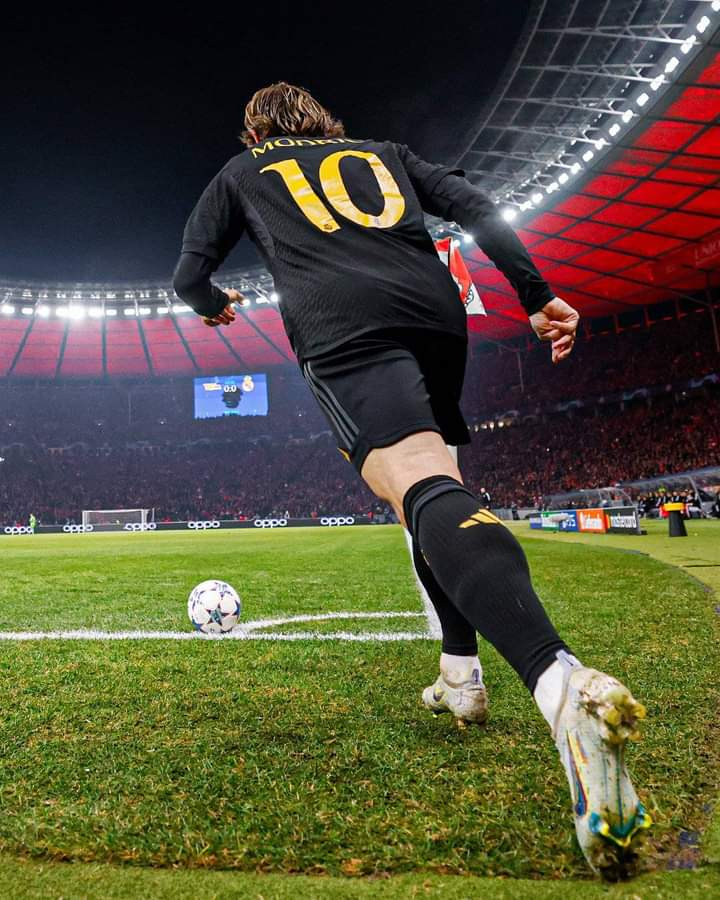
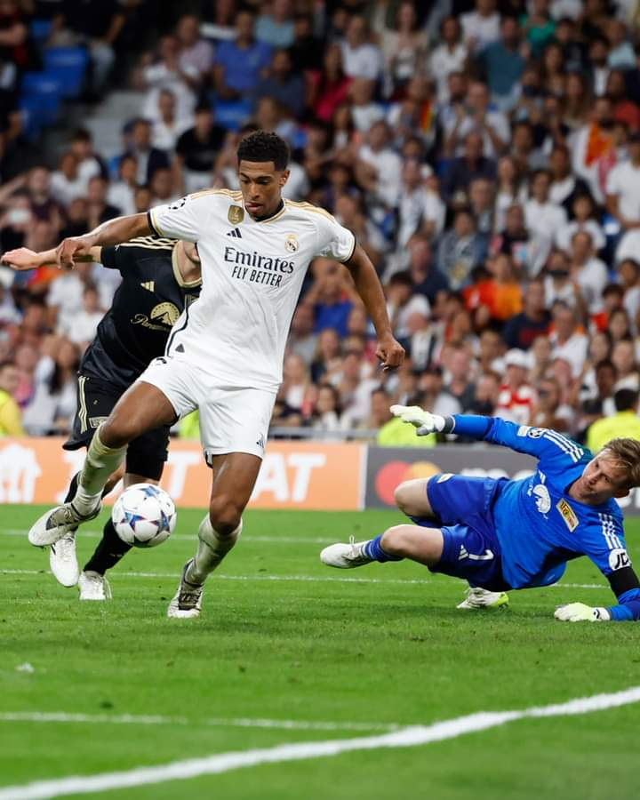
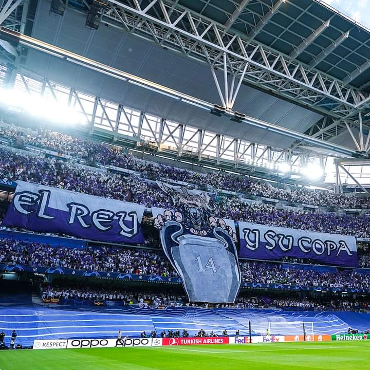
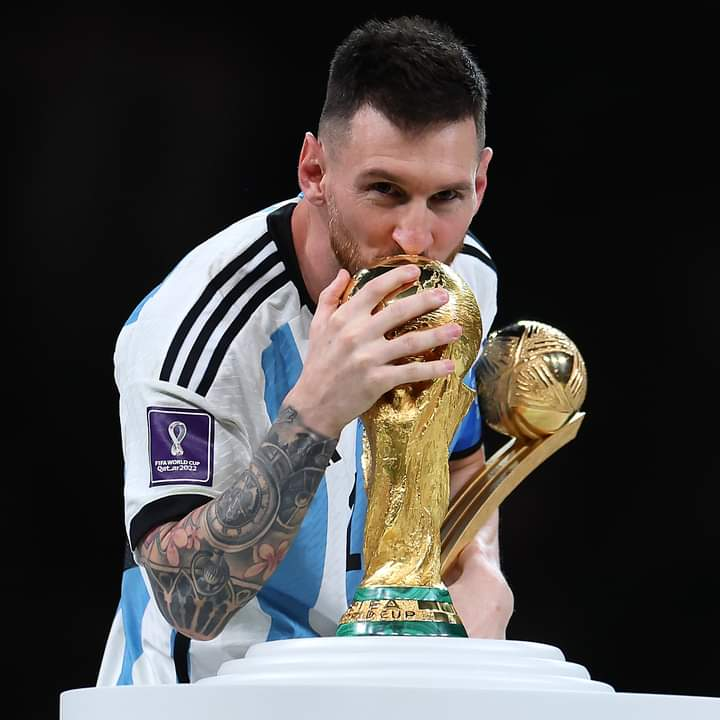
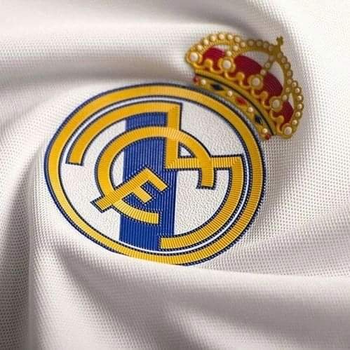

Sepak Bola

Sepak bola atau bola kaki adalah cabang olahraga yang dimainkan antara dua tim yang terdiri dari 11 pemain. Permainan ini menggunakan bola sepak berukuran 68–70 cm (27–28 in)
dan dimainkan di lapangan berbentuk persegi panjang. Tujuan dari permainan ini adalah untuk mencetak lebih banyak gol daripada tim lawan
dengan menggerakkan bola melewati garis gawang ke dalam gawang yang dijaga oleh tim lawan.
Permainan sepak bola diatur oleh Aturan-Aturan Permainan, seperangkat aturan yang telah berlaku sejak tahun 1863 dan dipertahankan oleh IFAB sejak 1886.
Selama pertandingan, para pemain menggunakan kaki mereka untuk mengontrol, menendang, atau mengoper bola. Hanya penjaga gawang yang boleh menggunakan tangan dan lengan mereka,
tetapi hanya di dalam area pinalti. Pertandingan sepak bola ini biasanya terdiri dari dua babak selama 45 menit, dengan total waktu pertandingan 90 menit. Tim yang mencetak gol
paling banyak pada akhir pertandingan menjadi pemenangnya. Jika hingga waktu berakhir masih berakhir imbang, maka dapat dilakukan undian, perpanjangan waktu maupun adu penalti,
bergantung pada format penyelenggaraan kejuaraan.

Sepak bola adalah salah satu olahraga paling populer di dunia, dengan sekitar 250 juta pemain yang aktif di lebih dari 200 negara dan wilayah. FIFA merupakan badan sepak bola internasional,
mengatur permainan sepak bola di tingkat internasional. Di bawah FIFA, terdapat enam konfederasi benua yang mengatur sepak bola di wilayah mereka masing-masing, AFC, CAF, CONCACAF, CONMEBOL, OFC dan UEFA.
Dari semua konfederasi ini, CONMEBOL adalah yang paling tertua, didirikan pada tahun 1916. Asosiasi nasional (misalnya FA atau JFA) bertanggung jawab untuk mengatur permainan di negara mereka sendiri baik secara
profesional maupun di tingkat amatir, dan mengoordinasikan kompetisi sesuai dengan Hukum Permainan yang berlaku. Kompetisi internasional yang paling populer adalah Piala Dunia FIFA dan Piala Dunia Wanita FIFA.
Selain itu, Liga Champions UEFA dan Liga Champions Wanita UEFA adalah kompetisi klub Eropa yang paling bergengsi.
Mengapa Sepak Bola Begitu Populer?

Ketika bermain sepak bola, kita tak perlu mengeluarkan uang ratusan ribu hingga jutaan rupiah. Cukup dengan bermodalkan beberapa belas ribu saja kita sudah bisa bermain sepuasnya. Bahkan tanpa mengeluarkan
biaya sepeser pun. Meski dalam sejarahnya, sepak bola juga dikapitalisasi jadi kursus, latihan eksklusif, dan tontonan yang bisa merogoh kocek, permainannya cenderung bisa dimainkan hampir semua kalangan.
Tidak seperti cabang olahraga golf dan tenis lapangan yang alatnya bisa bikin kita merogoh kocek cukup dalam, sepak bola bisa dibilang olahraga murah. Bolanya bisa menggunakan anyaman bambu, atau bola plastik.
Sedangkan gawangnya bisa dibikin dengan menjejerkan sandal di pinggir lapangan luas.
Sepak bola tidak menuntut kita harus punya lapangan yang bagus dan luas. Biasanya anak-anak kecil sering bermain sepak bola di mana saja. Dari sawah, tempat parkir, di gang-gang depan rumah, bahkan pantai.
Bahkan salah satu pemain termahal di dunia, Neymar Jr, mulai bermain sepak bola hanya bermodalkan jalanan. Saat itu keluarganya terbatas secara finansial, sehingga tidak bisa memasukkan Neymar ke akademi sepak bola.
Ini pun menjadi bukti kalau permainan sepak bola bisa dimainkan di mana saja tanpa harus repot mencari lapangan hijau. Sepak bola juga bisa dinikmati oleh berbagai kalangan, sehingga olahraga ini dianggap
mampu mengakrabkan semua pihak.
Sepak bola juga sudah menjadi tradisi di beberapa negara. Seperti di Brazil, sepak bola sudah dianggap sebagai budaya sendiri di sana. Diajarkan secara turun-temurun pada anak-anak sedari kecil untuk bermain sepak bola.
Maka tak heran Brazil menjadi salah satu negara paling kuat dalam hal sepak bola.

Sepak bola juga sudah menjadi turnamen terbesar di dunia. Sebut saja Piala Dunia yang ditonton hampir semua orang melalui televisi ataupun hadir langsung. Bahkan FIFA mencatat ada sekitar 1,5 miliar orang yang menonton Piala Dunia Qatar 2022,
lewat lebih dari 100 stasiun televisi dalam 86 negara di seluruh dunia. Hadiah yang diperebutkan dalam sepak bola juga menjadi yang terbesar karena totalnya bisa mencapai ratusan miliar hingga triliun rupiah. Sepak bola bahkan bisa mengalahkan
olimpiade yang diadakan empat tahun sekali. Para penggemar rela merogoh kantong mereka untuk melihat pertandingan tim favoritnya. Apalagi untuk turnamen piala dunia yang juga diadakan setiap empat tahun sekali mampu membuat keriuhan heboh.
Karena begitu disukai, beberapa pemain sepak bola terbaik di beberapa negara juga menjadi ikon dunia dan sangat digemari. Contohnya saja Cristiano Ronaldo, Neymar hingga David Beckham. Pesona mereka mampu menarik penggemar laki-laki dan juga perempuan.
Real Madrid : Salah Satu Tim Sepak Bola Tersukses dan Terbesar Dalam Sejarah

Real Madrid Club de Fútbol, umumnya dikenal sebagai Real Madrid, adalah klub sepak bola profesional yang berbasis di Madrid, Spanyol. Didirikan pada tahun 1902 sebagai Madrid Football Club, secara tradisional mengenakan kostum kandang putih.
Kata Real ("dari kerajaan") Spanyol dan dianugerahkan ke klub oleh Raja Alfonso XIII pada tahun 1920 bersama-sama dengan mahkota kerajaan di lambang klub. Klub ini telah memainkan pertandingan kandang di Stadion Santiago Bernabéu
dengan kapasitas 85.454 di pusat kota Madrid sejak tahun 1947.
Klub ini memantapkan dirinya sebagai kekuatan utama dalam sepak bola Spanyol dan Eropa selama tahun 1950. Di dalam negeri, Klub ini juga merupakan salah satu klub terbaik abad ke-20 menurut FIFA. Klub ini menjuarai Liga Champions 3 musim berturut-turut
dibawah kepelatihan Zinedine Zidane dan dengan mesin golnya yaitu pemain terbaik dunia Cristiano Ronaldo. Dalam kompetisi domestik, klub ini telah meraih 35 gelar La Liga (rekor), 20 gelar Piala Raja Spanyol, 12 Piala Super Spanyol, 1 Copa Eva Duarte,
1 Copa de la Liga. Di kompetisi tingkat Eropa dan Dunia, klub ini telah meraih 14 gelar Piala Champions Eropa/Liga Champions UEFA (rekor), 2 Piala UEFA/Liga Eropa UEFA, 5 Piala Super UEFA, dan 9 kejuaraan dunia antar klub (3 Piala Interkontinental ,
5 Piala Dunia Antarklub FIFA dan 1 Piala Ibero-American ).